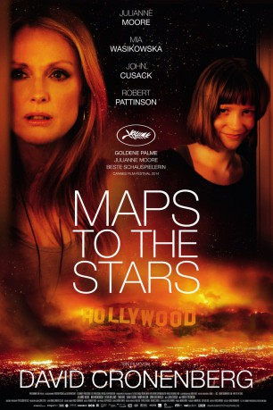

#5099 Maps to the Stars
 
 IMDB-Wertung: 6.2 / 10
IMDB-Wertung: 6.2 / 10  Metascore: 0
Metascore: 0 
Familie Weiss ist mittendrin im ganz normalen Hollywood-Wahnsinn: Kinderstar Benjie kann mit seinen dreizehn Jahren schon auf eine Drogenkarriere zurückblicken. Tochter Agatha hat vor Jahren das Haus der Familie in Brand gesteckt. Frisch aus der Psychiatrie entlassen, stürzt sie sich in eine Affäre mit dem Chauffeur Jerome und sucht Benjies Nähe, sehr zum Missfallen ihres Vaters Stafford. Der Guru arbeitet gerade an seinem neuen Buch. Nebenbei behandelt er die alternde Schauspielerin Havana, die vom Geist ihrer Mutter verfolgt wird, seit sie in einem Remake unbedingt die Rolle spielen will, die ihre Mutter einst berühmt machte.
Jahr: 2014
Dauer: 107 Minuten
FSK: 16
Land: Kanada Studio: MFA FilmdistributionTonspuren: DTS - ,
Untertitel:
Auflösung: 1080p (1920x1080) Größe: 6451 MB
Genre: Drama, Komödie
Regisseur:  David Cronenberg
David Cronenberg
Drehbuch: Benedikt Erlingsson
Soundtrack:
Darsteller:
 Julianne Moore als Havana Segrand
Julianne Moore als Havana Segrand Mia Wasikowska als Agatha Weiss
Mia Wasikowska als Agatha Weiss John Cusack als Dr. Stafford Weiss
John Cusack als Dr. Stafford Weiss- Evan Bird als Benjie Weiss
 Olivia Williams als Christina Weiss
Olivia Williams als Christina Weiss Robert Pattinson als Jerome Fontana
Robert Pattinson als Jerome Fontana- Kiara Glasco als Cammy
 Sarah Gadon als Clarice Taggart
Sarah Gadon als Clarice Taggart- Jonathan Watton als Sterl Carruth
- Jennifer Gibson als Starla Gent
- Gord Rand als Damien Javitz
- Justin Kelly als Rhett
 Niamh Wilson als Sam
Niamh Wilson als Sam- Clara Pasieka als Gretchen Voss
- Emilia McCarthy als Kayla
- Allegra Fulton als Harriet
- Jayne Heitmeyer als Azita Wachtel
- Sean G Robertson als Roy
- Ari Cohen als Jeb
 Joe Pingue als Arnold
Joe Pingue als Arnold- Donald Burda als Hank
 Carrie Fisher als Carrie Fisher
Carrie Fisher als Carrie Fisher Amanda Brugel als Star! Channel Interviewer
Amanda Brugel als Star! Channel Interviewer- Alden Adair als 2nd AD, Blue Matrix
- David Amito als PA, Blue Matrix
 Dan Lett als Talkshow Host
Dan Lett als Talkshow Host- Sandra Battaglini als Havana's Housekeeper
- Chris Anton als Rusty
- George Nickolas K. als Dispatcher
- Murray Furrow als Husband
- Byron Lane als Celebrity Assistant , uncredited
- Lex Michael als Bus Passenger , uncredited
- Ramiro Paré als Entourage Crew , uncredited
- Dawn Greenhalgh als Genie
- Domenic Ricci als Micah
- Christian Lloyd als Stu
- Joanne Reece als Nurse
- Joseph Murray als Young Intern
- Adrienne Wilson als Wife
- Neil Girvan als Bad Babysitter 2 Director
- Shane Jarvis als Boom Operator , uncredited
Datei: X:\2014(G-M)\Maps to the Stars (2014, FSK16, 1920x1080).mkv seit 23.12.2016
Festplatte: HD 2013(I-Z)-2014(A-Z)
 Es gibt insgesamt 136 Filme in der Gruppe '2014(G-M)'
Es gibt insgesamt 136 Filme in der Gruppe '2014(G-M)'